Useful drawers for building custom shape plots using the grindr approach. See examples and vignettes.
draw_polygon( coo, f, col = par("fg"), fill = NA, lwd = 1, lty = 1, transp = 0, pal = pal_qual, ... ) draw_outline( coo, f, col = par("fg"), fill = NA, lwd = 1, lty = 1, transp = 0, pal = pal_qual, ... ) draw_outlines( coo, f, col = par("fg"), fill = NA, lwd = 1, lty = 1, transp = 0, pal = pal_qual, ... ) draw_points( coo, f, col = par("fg"), cex = 1/2, pch = 20, transp = 0, pal = pal_qual, ... ) draw_landmarks( coo, f, col = par("fg"), cex = 1/2, pch = 20, transp = 0, pal = pal_qual, ... ) draw_lines( coo, f, col = par("fg"), lwd = 1, lty = 1, transp = 0, pal = pal_qual, ... ) draw_centroid( coo, f, col = par("fg"), pch = 3, cex = 0.5, transp = 0, pal = pal_qual, ... ) draw_curve( coo, f, col = par("fg"), lwd = 1, lty = 1, transp = 0, pal = pal_qual, ... ) draw_curves( coo, f, col = par("fg"), lwd = 1, lty = 1, transp = 0, pal = pal_qual, ... ) draw_firstpoint( coo, f, label = "^", col = par("fg"), cex = 3/4, transp = 0, pal = pal_qual, ... ) draw_axes(coo, col = "#999999", lwd = 1/2, ...) draw_ticks(coo, col = "#333333", cex = 3/4, lwd = 3/4, ...) draw_labels(coo, labels = 1:nrow(coo), cex = 1/2, d = 1/20, ...) draw_links( coo, f, links, col = "#99999955", lwd = 1/2, lty = 1, transp = 0, pal = pal_qual, ... ) draw_title( coo, main = "", sub = "", cex = c(1, 3/4), font = c(2, 1), padding = 1/200, ... )
Arguments
| coo |
|
|---|---|
| f | an optionnal factor specification to feed. See examples and vignettes. |
| col | color (hexadecimal) to draw components |
| fill | color (hexadecimal) to draw components |
| lwd | to draw components |
| lty | to draw components |
| transp |
|
| pal | a palette to use if no col/border/etc. are provided. See |
| ... | additional options to feed core functions for each drawer |
| cex | to draw components (( |
| pch | to draw components |
| label | to indicate first point |
| labels |
|
| d |
|
| links |
|
| main |
|
| sub |
|
| font | |
| padding |
|
Note
This approach will (soon) replace coo_plot and friends in further versions. All comments are welcome.
See also
grindr_layers
Other grindr:
layers_morphospace,
layers,
mosaic_engine(),
papers,
pile(),
plot_LDA(),
plot_NMDS(),
plot_PCA()
Examples
olea %>% paper_chess %>% draw_lines(~var)hearts[240] %>% paper_white() %>% draw_outline() %>% coo_sample(24) %>% draw_landmarks %>% draw_labels() %>% draw_links(links=replicate(2, sample(1:24, 8)))bot %>% paper_grid() %>% draw_outlines() %>% draw_title("Alcohol abuse \nis dangerous for health", "Drink responsibly")